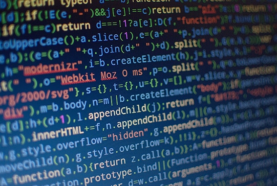
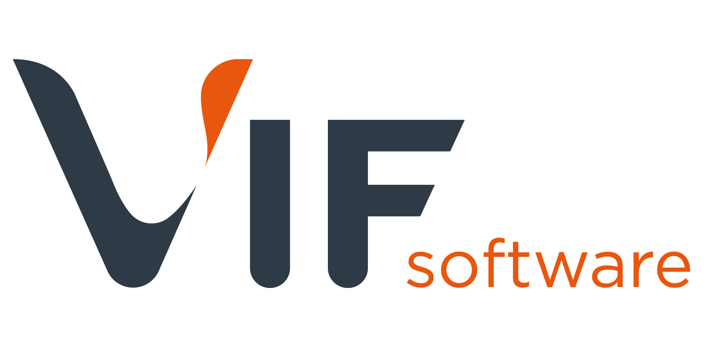
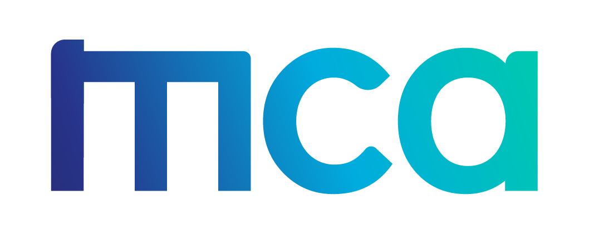
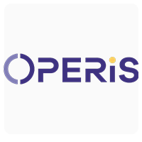
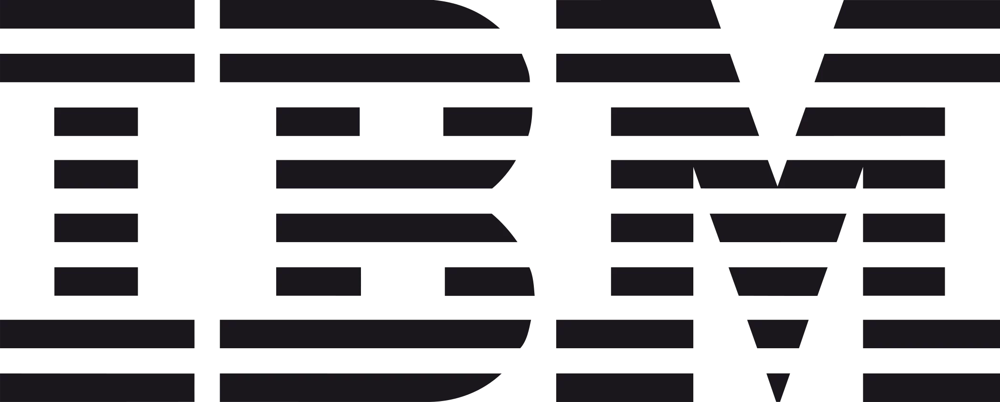
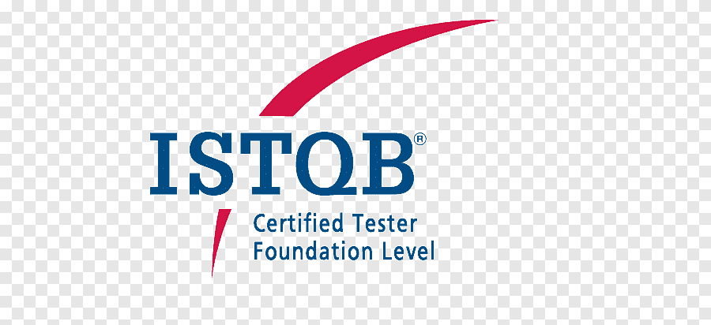
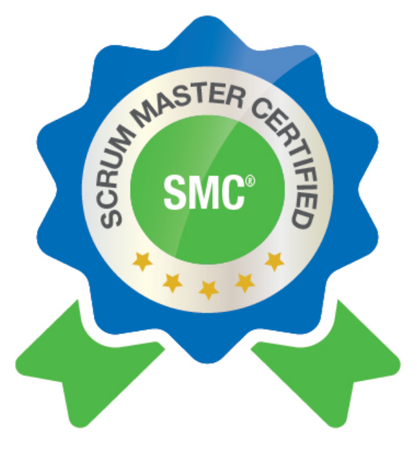

Ingénieur QA Polyvalent
“Garantir la qualité c’est faire du test un moteur d’innovation.”
Master 2 informatique : Ingénierie du test et de la validation logiciels & systèmes
Université d’Angers & Université Marie et Louis Pasteur / Besançon
Spécialisation : tests logiciels, validation de systèmes complexes, QA, automatisation, gestion de projets techniques.
Expériences
Juin 2024 - Aujourd'hui

Chef de projet test & qualité logicielle
VIF Software • Nantes- Analyse des exigences : étude des spécifications fonctionnelles et techniques.
- Définition et mise en œuvre de la stratégie de test en s’alignant avec les objectifs métiers (couvrant les tests fonctionnels, performance et de charge).
- Identification des scénarios et rédaction des cas de tests :
- Tests Manuels : rédaction de plans de test, exécution des tests via HP-ALM, réalisation de tests exploratoires, documentation et suivi des bugs (JIRA, SBM).
- Tests Automatiques : conception, développement et maintenance de scripts de tests automatisés sur UFT-One et Katalon studio (VBScript, Groovy).
- Tests non fonctionnels : Rédaction et exécution des cas de tests de performance & charge avec JMeter.
- Analyse des Résultats : Identifier les régressions, génération de rapports et communication des résultats aux équipes concernées.
- Mise en place des indicateurs clés de performance KPI pour le suivi des activités de tests.
- Pilotage de compagnes de tests.
- Coordination des actions entre l’équipe test, développement et l’équipe produit.
- Communication proactive avec les parties prenantes internes et externes.
Juin 2023 - Juin 2024

Consultant test et validation
MCA Ingénierie • Nantes- Analyse et couverture des exigences métiers, définition des scénarios et rédaction des cas de tests.
- Automatisation des tests (application bureau et web), avec UFT-One et Katalon studio.
- Pilotage de tests non fonctionnels : lancement et exploitation de campagnes de tests de performances (JMeter).
- Gestion des anomalies : ouverture, suivi et coordination de leur correction via JIRA.
- Exécution des campagnes de tests de non-régression (TNR) pour garantir la stabilité des fonctionnalités.
Octobre 2022 - Juin 2023

Testeur fonctionnel
OPERIS • Nantes- Analyse des exigences métiers et des spécifications pour assurer la couverture des besoins.
- Rédiger des cas de tests à partir des user story dans Squash-TM.
- Exécuter les tests
- Rédiger les anomalies rencontrées et suivre leur résolution dans JIRA
- Participer au référentiel de tests dans une démarche Agile
Compétences & outils
Live Code QA — ERP_VIF
Scénarios à tester :
// Habib Mahjoubi – Test QA ERP VIF : Lot conforme
let lot = { produit: 'semoule', qualite: 'OK', erp: 'VIF' };
assert(lot.produit === 'semoule');
assert(lot.qualite === 'OK');
assert(lot.erp === 'VIF');
Ces tests simulent des validations automatiques sur les lots de production ERP VIF.
(Réalisation : Habib Mahjoubi)
(Réalisation : Habib Mahjoubi)
Certifications

IBM AI Engineering
IBM AI Engineering
IBM, 2024
Deep learning, PyTorch, Keras
IBM, 2024
Deep learning, PyTorch, Keras

PMP®
Project Management Professional (PMP)
PMI, 2024-2027
PMI, 2024-2027

ISTQB Tester
ISTQB Certified Tester Foundation Level
2021
2021
A4Q Selenium
A4Q Certified Selenium Tester Foundation Level
2022
2022

Scrum Master (SMC™)
Scrum Master Certified
SMC™, 2023-2026
SMC™, 2023-2026
Six Sigma YB
Six Sigma Yellow Belt
VMEdu, 2023
VMEdu, 2023